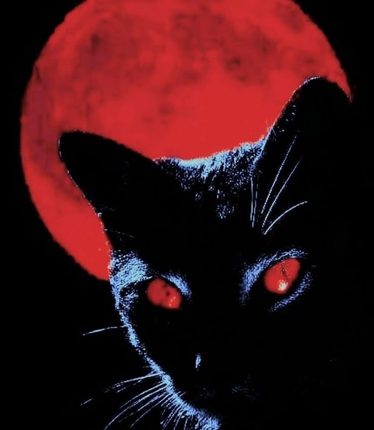
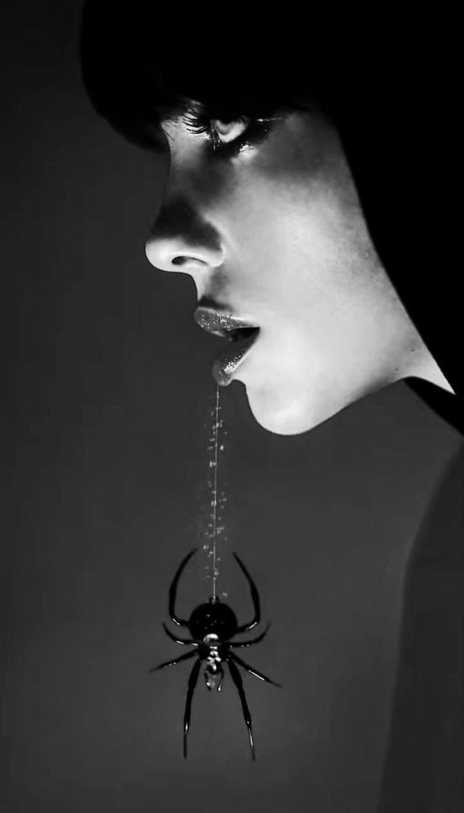

Explora tu lado oscuro
Accesorios góticos únicos para almas intensas
Bienvenido a Gothic Shop
En nuestra tienda encontrarás una cuidada selección de accesorios góticos que combinan elegancia, misterio y autenticidad. Desde collares con cruces negras hasta bolsos con encaje victoriano, te ofrecemos piezas exclusivas para resaltar tu estilo.
